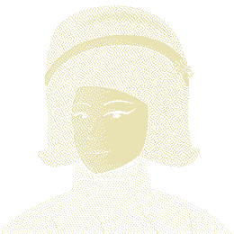

<title>$ELIZA1966</title>
<meta name="viewport" content="width=device-width, initial-scale=1, viewport-fit=cover">
<meta name="description" content="The first chatbot ever written, running its original 1966 code, on a machine you type into with your mouse.">
<meta property="og:title" content="$ELIZA1966">
<meta property="og:description" content="The first chatbot ever written, running its original 1966 code, on a machine you type into with your mouse.">
<link rel="preconnect" href="https://fonts.googleapis.com">
<link rel="preconnect" href="https://fonts.gstatic.com" crossorigin>
<link rel="stylesheet" href="https://fonts.googleapis.com/css2?family=Archivo:wdth,wght@62..125,400..800&family=IBM+Plex+Mono:wght@400;500&display=swap">
<style>
/* Layout: one huge machine centred on black; below it, quiet sections that
   each do one thing (a scrubbed printout, a trace, a line, a contract). */
:root {
  --black: #0A0A08;   /* page and screen */
  --cream: #E9E3B4;   /* plastic and phosphor */
  --shadow: #B9B183;  /* cream in shadow, key sides, secondary text */
  --dark: #2A2A24;    /* key tops, stipple, bezel */
  --cursor: #F2D23A;  /* the block cursor, nothing else */
  --display: 'Archivo', 'Arial Narrow', 'Helvetica Neue', Arial, sans-serif;
  --mono: 'IBM Plex Mono', 'SFMono-Regular', Menlo, Consolas, monospace;
  --gutter: 16px;
  color-scheme: dark;
}
* { box-sizing: border-box; }
html { background: var(--black); }
html.lenis, html.lenis body { height: auto; }
.lenis.lenis-smooth { scroll-behavior: auto !important; }
.lenis.lenis-smooth [data-lenis-prevent] { overscroll-behavior: contain; }
body {
  background: var(--black); color: var(--cream);
  font-family: var(--display); font-size: 16px; line-height: 1.5;
  margin: 0; padding-inline: var(--gutter); overflow-x: hidden;
  -webkit-font-smoothing: antialiased;
}
a { color: inherit; }
::selection { background: var(--cream); color: var(--black); }
.sr-only { position: absolute; width: 1px; height: 1px; overflow: hidden; clip: rect(0 0 0 0); white-space: nowrap; }
:focus-visible { outline: 2px solid var(--cream); outline-offset: 3px; }

/* ------------------------------------------------------------ top bar */
.topbar {
  display: flex; justify-content: space-between; align-items: center; gap: 16px;
  padding-block: 18px 0; max-width: 1400px; margin-inline: auto;
  font-stretch: 87.5%;
}
.wordmark { font-weight: 800; font-size: 17px; letter-spacing: .01em; text-decoration: none; }
.toggles { display: flex; gap: 18px; flex-wrap: wrap; justify-content: flex-end; }
.toggle {
  font: 600 13px/1 var(--display); font-stretch: 87.5%; color: var(--shadow);
  background: none; border: 0; padding: 6px 0; cursor: pointer;
}
.toggle[aria-pressed="true"] { color: var(--cream); }
.toggle:hover { color: var(--cream); }

/* --------------------------------------------------------------- hero */
.hero { display: flex; flex-direction: column; align-items: center; padding-block: 2vh 0; }
.machine {
  position: relative;
  height: min(80vh, calc((100vw - 2 * var(--gutter)) * 1060 / 1200));
  aspect-ratio: 1200 / 1060; max-width: 100%;
  transform-origin: 50% 60%;
}
.machine svg { position: absolute; inset: 0; width: 100%; height: 100%; overflow: visible; }
.intro .machine { transform: scale(.96); }
.intro.reveal .machine { transform: scale(1); transition: transform 1200ms cubic-bezier(.16,1,.3,1); }
.intro .machine svg { visibility: hidden; }
.intro.reveal .machine svg { visibility: visible; }

.key { cursor: pointer; outline: none; -webkit-tap-highlight-color: transparent; }
.key .k-cap { transition: transform 110ms cubic-bezier(.2,.8,.2,1); }
.key .k-side { transition: transform 110ms cubic-bezier(.2,.8,.2,1); }
.key .k-press { opacity: 0; transition: opacity 110ms cubic-bezier(.2,.8,.2,1); }
.key .k-label { font-family: var(--mono); font-weight: 500; pointer-events: none; user-select: none; }
.k-light .k-label { font-family: var(--display); font-weight: 700; letter-spacing: .08em; }
@media (hover: hover) { .key:hover .k-cap { transform: translateY(-1.5px); } }
.key.down .k-cap, .key.latched .k-cap { transform: translateY(3px); transition-duration: 50ms; transition-timing-function: ease-in; }
.key.down .k-side, .key.latched .k-side { transform: scaleY(.7); transition-duration: 50ms; transition-timing-function: ease-in; }
.key.down .k-press, .key.latched .k-press { opacity: .32; transition-duration: 50ms; }
.k-light.down .k-press, .k-light.latched .k-press { opacity: .16; }
.key .k-focus { stroke: var(--cream); stroke-width: 2px; vector-effect: non-scaling-stroke; opacity: 0; }
.key:focus-visible .k-focus { opacity: 1; }
.k-light:focus-visible .k-focus { stroke: var(--dark); }

/* the screen: real HTML text laid over the glass */
.screen {
  position: absolute; overflow: hidden; color: var(--cream);
  font-family: var(--mono); font-size: var(--fs, 12px); line-height: 1.32;
  border-radius: var(--srad, 20px);
  box-shadow: inset 0 0 0 1px var(--dark), inset 0 3px 0 0 rgba(0,0,0,.55);
  cursor: text;
}
.screen-inner { visibility: hidden; position: absolute; inset: var(--spad, 18px); display: flex; flex-direction: column; }
.screen-title {
  font: 800 calc(var(--fs) * 2.3)/1 var(--display); font-stretch: 87.5%;
  letter-spacing: .02em; margin-bottom: calc(var(--fs) * .55); flex: none;
}
.paper {
  flex: 1; min-height: 0; overflow-y: auto; scrollbar-width: none;
  white-space: pre-wrap; word-break: break-word; outline: none;
}
.paper::-webkit-scrollbar { display: none; }
.ln { min-height: 1.32em; }
.ln.eliza { text-transform: none; }
.portrait { font-size: var(--pfs, 6px); line-height: 1; white-space: pre; overflow: hidden; }
.portrait .ln { min-height: 1em; }
.cursor { display: inline-block; width: .62em; height: 1.08em; vertical-align: -.2em; background: var(--cursor); animation: blink 1060ms steps(1) infinite; }
.cursor.solid { animation: none; }
@keyframes blink { 50% { visibility: hidden; } }
.scan {
  position: absolute; inset: 0; pointer-events: none;
  background: repeating-linear-gradient(to bottom, rgba(233,227,180,.06) 0 1px, transparent 1px 3px);
}
.powered .screen-inner { visibility: visible; }
.crt { position: absolute; inset: 0; background: var(--cream); transform: scaleY(0); opacity: 0; pointer-events: none; }
.crt.on { animation: crt 500ms cubic-bezier(.7,0,.3,1) forwards; }
@keyframes crt {
  0% { transform: scaleY(.004) scaleX(.2); opacity: 1; }
  45% { transform: scaleY(.004) scaleX(1); opacity: 1; }
  75% { transform: scaleY(1) scaleX(1); opacity: .9; }
  100% { transform: scaleY(1) scaleX(1); opacity: 0; }
}
.mobile-input { position: absolute; left: 0; bottom: 0; width: 1px; height: 1px; opacity: 0; border: 0; padding: 0; font-size: 16px; }

.hero-meta {
  display: flex; gap: 10px; flex-wrap: wrap; justify-content: center;
  font: 500 13px/1.4 var(--display); font-stretch: 87.5%; color: var(--shadow);
  padding-block: 14px 0; text-align: center;
}
.skip {
  position: fixed; right: calc(var(--gutter) + env(safe-area-inset-right, 0px)); bottom: calc(16px + env(safe-area-inset-bottom, 0px));
  font: 600 13px/1 var(--display); font-stretch: 87.5%; color: var(--shadow);
  background: var(--black); border: 0; padding: 8px 4px; cursor: pointer; z-index: 5;
}
.skip:hover { color: var(--cream); }

/* ----------------------------------------------------------- sections */
.section { max-width: 1100px; margin-inline: auto; padding-block: clamp(96px, 16vh, 180px) 0; }
h2 {
  font: 800 clamp(34px, 5.4vw, 68px)/.95 var(--display); font-stretch: 80%;
  letter-spacing: -.01em; margin: 0 0 22px; text-wrap: balance;
}
.lede { color: var(--shadow); max-width: 58ch; font-size: clamp(16px, 1.6vw, 19px); margin: 0 0 40px; }
.btn {
  display: inline-flex; align-items: center; gap: 8px;
  font: 700 15px/1 var(--display); font-stretch: 87.5%; color: var(--cream);
  background: none; border: 1.5px solid var(--cream); border-radius: 2px;
  padding: 12px 16px; text-decoration: none; cursor: pointer;
}
.btn:hover { background: var(--cream); color: var(--black); }

/* the code: fanfold printout */
.code { height: 340vh; position: relative; padding: 0; max-width: none; margin-top: clamp(80px, 14vh, 160px); }
.code-sticky {
  position: sticky; top: 0; height: 100vh; display: grid; grid-template-rows: 1fr auto;
  padding-block: 24px; gap: 18px;
}
.paper-window { overflow: hidden; display: flex; justify-content: center; min-height: 0; }
.fanfold {
  --lh: 18px;
  position: relative; width: min(800px, 100%); align-self: flex-start;
  background: var(--cream); color: var(--dark); will-change: transform;
  padding: 0 46px;
}
.fanfold::before, .fanfold::after {
  content: ''; position: absolute; top: 0; bottom: 0; width: 46px;
  background: radial-gradient(circle at 50% 50%, var(--black) 0 5.5px, transparent 6px) 0 6px / 46px 24px repeat-y;
}
.fanfold::before { left: 0; } .fanfold::after { right: 0; }
.fanfold pre {
  margin: 0; padding: calc(var(--lh) * 2) 26px calc(var(--lh) * 4);
  font: 400 12px/var(--lh) var(--mono); white-space: pre; overflow: hidden;
  border-inline: 1px dashed var(--shadow);
  background:
    repeating-linear-gradient(to bottom, transparent 0 calc(var(--lh) * 66 - 1px), var(--shadow) calc(var(--lh) * 66 - 1px) calc(var(--lh) * 66)),
    repeating-linear-gradient(to bottom, rgba(185,177,131,.42) 0 calc(var(--lh) * 3), transparent calc(var(--lh) * 3) calc(var(--lh) * 6));
  background-position: 0 calc(var(--lh) * 2);
}
.fanfold .head { font-weight: 500; }
.code-caption {
  display: flex; gap: 14px 24px; align-items: center; justify-content: center; flex-wrap: wrap;
  color: var(--shadow); text-align: center;
}
.code-caption p { margin: 0; }

/* how she thinks */
.trace { margin: 0; display: grid; gap: 4px; max-width: 900px; }
.trace .row {
  display: grid; grid-template-columns: 150px minmax(0, 1fr); gap: 16px;
  padding-block: 9px; border-top: 1px solid var(--dark);
}
.trace dt { font: 600 14px/1.5 var(--display); font-stretch: 87.5%; color: var(--shadow); }
.trace dd { margin: 0; font: 400 15px/1.5 var(--mono); overflow-wrap: anywhere; }
.trace .row.reply dd { font-weight: 500; }
.trace.play .row { animation: line-in 1ms both; animation-delay: calc(var(--i) * 120ms); }
@keyframes line-in { from { visibility: hidden; } to { visibility: visible; } }
.note { color: var(--shadow); font-size: 13px; margin: 18px 0 0; font-stretch: 87.5%; }

/* timeline */
.tl { position: relative; padding-block: 30px 0; }
.tl-line { position: absolute; left: 7px; right: 0; top: 36px; height: 2px; background: var(--dark); }
.tl-fill { position: absolute; inset: 0; background: var(--cream); transform-origin: 0 50%; transform: scaleX(var(--p, 1)); }
.tl ol { list-style: none; margin: 0; padding: 0; display: grid; grid-template-columns: repeat(5, minmax(0, 1fr)); gap: 24px; }
.tl li { position: relative; padding-top: 34px; min-width: 0; }
.tl .dot {
  position: absolute; top: 0; left: 0; width: 14px; height: 14px; border-radius: 50%;
  background: var(--black); border: 2px solid var(--cream); transition: background 160ms;
}
.tl li.on .dot { background: var(--cream); }
.tl b { display: block; font: 800 26px/1 var(--display); font-stretch: 80%; margin-bottom: 10px; }
.tl p { margin: 0; color: var(--shadow); font-size: 15px; max-width: 30ch; }

/* token */
.token { display: grid; grid-template-columns: minmax(0, 1fr) minmax(0, 1.2fr); gap: clamp(32px, 6vw, 90px); align-items: center; }
.token img { width: 100%; max-width: 520px; image-rendering: pixelated; display: block; }
.ticker { font: 800 clamp(44px, 8vw, 104px)/.9 var(--display); font-stretch: 75%; letter-spacing: -.01em; margin: 0 0 10px; overflow-wrap: anywhere; }
.chain { font: 600 15px/1 var(--display); font-stretch: 87.5%; color: var(--shadow); margin: 0 0 26px; }
.ca { display: flex; flex-wrap: wrap; gap: 12px 16px; align-items: center; margin-bottom: 26px; }
.ca code { font: 400 17px/1.4 var(--mono); }
.ca .copy { font: 600 14px/1 var(--display); font-stretch: 87.5%; color: var(--shadow); background: none; border: 0; padding: 6px 0; cursor: pointer; min-width: 52px; text-align: left; }
.ca .copy:hover { color: var(--cream); }
.actions { display: flex; flex-wrap: wrap; gap: 12px; }

/* footer */
footer {
  max-width: 1100px; margin-inline: auto; padding-block: clamp(96px, 16vh, 180px) 40px;
  display: grid; gap: 22px; color: var(--shadow); font-size: 14px;
}
footer .concept { color: var(--cream); font: 700 clamp(20px, 2.4vw, 28px)/1.2 var(--display); font-stretch: 87.5%; max-width: 32ch; margin: 0; text-wrap: balance; }
footer nav { display: flex; gap: 22px; flex-wrap: wrap; align-items: center; }
footer nav a { font-weight: 600; text-decoration: none; color: var(--cream); }
footer nav a:hover { text-decoration: underline; }
footer p { margin: 0; max-width: 70ch; }

/* wallet module */
dialog.wallet {
  background: var(--black); color: var(--cream); border: 1.5px solid var(--cream); border-radius: 2px;
  padding: 26px; width: min(440px, calc(100vw - 32px));
}
dialog.wallet::backdrop { background: rgba(10,10,8,.82); }
.wallet h3 { font: 800 28px/1 var(--display); font-stretch: 80%; margin: 0 0 18px; }
.wallet dl { display: grid; grid-template-columns: auto minmax(0,1fr); gap: 8px 16px; margin: 0 0 22px; font-size: 14px; }
.wallet dt { color: var(--shadow); }
.wallet dd { margin: 0; font-family: var(--mono); overflow-wrap: anywhere; }
.wallet .msg { color: var(--shadow); font-size: 14px; min-height: 1.5em; margin: 14px 0 0; }

@media (max-width: 767px) {
  .topbar { padding-block: 14px 0; }
  .hero { padding-block: 4vh 0; }
  .machine { height: auto; width: 100%; aspect-ratio: 1044 / 1050; }
  .fanfold { padding: 0 20px; }
  .fanfold::before, .fanfold::after { width: 20px; background-size: 20px 16px; background-position: 0 4px; background-image: radial-gradient(circle at 50% 50%, var(--black) 0 3.5px, transparent 4px); }
  .fanfold pre { font-size: 6.4px; padding-inline: 6px; }
  .fanfold { --lh: 9px; }
  .trace .row { grid-template-columns: minmax(0, 1fr); gap: 2px; }
  .tl-line { left: 6px; right: auto; top: 34px; bottom: 0; width: 2px; height: auto; }
  .tl-fill { transform-origin: 50% 0; transform: scaleY(var(--p, 1)); }
  .tl ol { grid-template-columns: minmax(0, 1fr); gap: 34px; }
  .tl li { padding: 0 0 0 34px; }
  .tl .dot { top: 4px; }
  .token { grid-template-columns: minmax(0, 1fr); }
  .token img { max-width: 320px; }
}
@media (prefers-reduced-motion: reduce) {
  .key .k-cap, .key .k-side { transition: none !important; transform: none !important; }
  .cursor { animation: none; }
  .code { height: auto; }
  .code-sticky { position: static; height: auto; }
  .paper-window { max-height: 70vh; overflow: auto; }
  .intro .machine { transform: none; }
}
</style>

<header class="topbar">
  <a class="wordmark" href="#top" id="top">$ELIZA1966</a>
  <div class="toggles">
    <button class="toggle" id="sound-toggle" type="button" aria-pressed="false">sound: off</button>
    <button class="toggle" id="speed-toggle" type="button" aria-pressed="false">1966 speed: off</button>
  </div>
</header>

<main>
  <section class="hero intro" id="hero" aria-label="ELIZA terminal">
    <div class="machine" id="machine">
      <svg id="terminal" xmlns="http://www.w3.org/2000/svg"></svg>
      <div class="screen" id="screen">
        <div class="crt" id="crt" aria-hidden="true"></div>
        <div class="screen-inner">
          <div class="screen-title" aria-hidden="true">ELIZA</div>
          <div class="paper" id="paper" role="log" aria-label="Conversation with ELIZA" data-lenis-prevent tabindex="-1"></div>
        </div>
        <div class="scan" aria-hidden="true"></div>
        <div class="sr-only" aria-live="polite" id="live"></div>
        <input class="mobile-input" id="mobile-input" type="text" inputmode="text" autocomplete="off" autocorrect="off" autocapitalize="off" spellcheck="false" aria-label="Type to ELIZA">
      </div>
    </div>
    <p class="hero-meta"><span id="mode-label">connecting to the 7094…</span><span aria-hidden="true">·</span><span>or just use your keyboard</span></p>
  </section>

  <section class="section code" id="code" aria-label="The ELIZA source code">
    <div class="code-sticky">
      <div class="paper-window" id="paper-window" data-lenis-prevent-touch>
        <div class="fanfold" id="fanfold"><pre id="source"></pre></div>
      </div>
      <div class="code-caption">
        <p>Found in Weizenbaum's papers at MIT in 2021. Open source under CC0.</p>
        <a class="btn" id="source-link" href="https://github.com/elizafirstai/eliza1966/blob/main/original/eliza.mad" target="_blank" rel="noopener">read the source</a>
      </div>
    </div>
  </section>

  <section class="section thinks" id="thinks">
    <h2>how she thinks</h2>
    <p class="lede">ELIZA understands nothing. She looks for the highest-ranked keyword in your sentence, matches the sentence against one of that keyword's patterns, and fills a template with your own words.</p>
    <dl class="trace" id="trace"></dl>
    <p class="note" id="trace-note">Trace from the JavaScript port of the 1966 algorithm, reading the original DOCTOR script.</p>
  </section>

  <section class="section timeline" id="timeline">
    <h2>sixty years, one script</h2>
    <div class="tl" id="tl">
      <div class="tl-line" aria-hidden="true"><div class="tl-fill" id="tl-fill"></div></div>
      <ol>
        <li class="on"><span class="dot" aria-hidden="true"></span><b>1964–66</b><p>Joseph Weizenbaum writes ELIZA at MIT, in MAD-SLIP, for the IBM 7094 time-sharing system CTSS.</p></li>
        <li class="on"><span class="dot" aria-hidden="true"></span><b>1966</b><p>Named after Eliza Doolittle, the flower seller in Shaw's Pygmalion who is taught to talk like a lady.</p></li>
        <li class="on"><span class="dot" aria-hidden="true"></span><b>2021</b><p>The original source printout turns up among Weizenbaum's papers in the MIT archives.</p></li>
        <li class="on"><span class="dot" aria-hidden="true"></span><b>2025</b><p>Running again on an emulated IBM 7094, under a reconstructed CTSS.</p></li>
        <li class="on"><span class="dot" aria-hidden="true"></span><b>today</b><p>On Solana as $ELIZA1966, and still asking how that makes you feel.</p></li>
      </ol>
    </div>
  </section>

  <section class="section token" id="token" aria-label="$ELIZA1966 token">
    
    <div>
      <p class="ticker">$ELIZA1966</p>
      <p class="chain" id="chain">on Solana</p>
      <div class="ca">
        <code id="ca-text" title="Solana mint address">CA: not live yet</code>
        <button class="copy" id="ca-copy" type="button">copy</button>
      </div>
      <div class="actions">
        <a class="btn" id="dex-link" href="https://dexscreener.com/" target="_blank" rel="noopener">DexScreener</a>
        <button class="btn" id="buy" type="button">buy</button>
      </div>
    </div>
  </section>
</main>

<footer>
  <p class="concept">The first chatbot ever written, running its original 1966 code, on a machine you type into with your mouse.</p>
  <nav>
    <a id="x-link" href="https://x.com/eliza1966org" target="_blank" rel="noopener">X</a>
    <a id="gh-link" href="https://github.com/elizafirstai/eliza1966" target="_blank" rel="noopener">GitHub</a>
    <button class="toggle" id="sound-toggle-2" type="button" aria-pressed="false">sound: off</button>
  </nav>
  <p>ELIZA was created by Joseph Weizenbaum. This project is a tribute and is not affiliated with MIT or his estate.</p>
  <p>Open source: this site and bridge MIT, ELIZA source CC0, s709 IBM 7094 emulator MIT licence · restoration by Rupert Lane, Anthony Hay, Arthur Schwarz, Jeff Shrager and the ELIZA archaeology team.</p>
</footer>

<button class="skip" id="skip" type="button" hidden>skip boot</button>

<script src="https://cdnjs.cloudflare.com/ajax/libs/gsap/3.12.5/gsap.min.js"></script>
<script src="https://cdnjs.cloudflare.com/ajax/libs/gsap/3.12.5/ScrollTrigger.min.js"></script>
<script src="https://cdn.jsdelivr.net/npm/lenis@1.1.13/dist/lenis.min.js"></script>
<script src="https://cdnjs.cloudflare.com/ajax/libs/howler/2.2.4/howler.min.js"></script>
<script type="module" src="js/main.js"></script>
